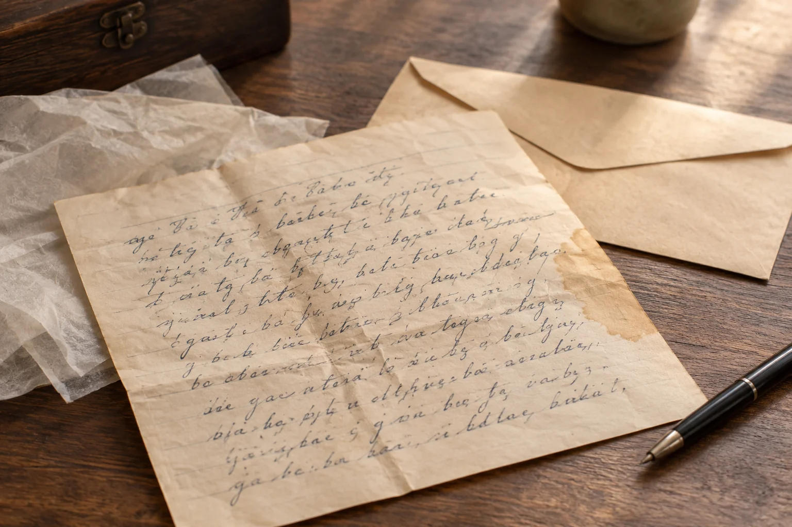

苏州书信旁的水渍盖住墨线，模仿笔迹参考如何标注缺损
旧信件的水渍、污迹和磨损可能与文字重叠。整理时能看见缺损就说明缺损，不必为了让句子完整而在图上补字。

缺损位置先保留原样
苏州模仿笔迹参考如果有污渍遮挡，先保存完整页面，再拍必要局部。释读需要可在单独文档中说明，不用橡皮擦工具清除纸面痕迹。水渍区域里的文字有多少仍可辨认，应按实际图像记录，不能根据上下文推定每一笔原来如何写成。
纸面现象不要直接推断经过
照片显示污迹，并不足以确认具体成因和发生时间。提供者知道的保存背景可以记录，整理者不能凭外观补出一段受损经过。材料目录把已确认信息与可见状态分开，后续若收到更早照片，也能清楚核对变化而不与原说明冲突。
落款附近的缺口同样标明
模仿签名、模仿签字参考若部分被遮住，应注明不完整。不能从其他签写中挑出相似笔画接上去，也不把修复软件猜出的线条当成原件。整次落款和所在页面继续关联，接收者才知道哪些结构确实可见，哪些暂时无法观察。
新材料追加不覆盖
笔迹鉴定资料若补到损坏前的照片，先核对是否同一页，再建立版本关系。旧图仍反映当前状态，不必删除。清单记明来源和收到时间，后续比较就能围绕实际材料展开，不会把人为修复后的图片误当成首次记录。